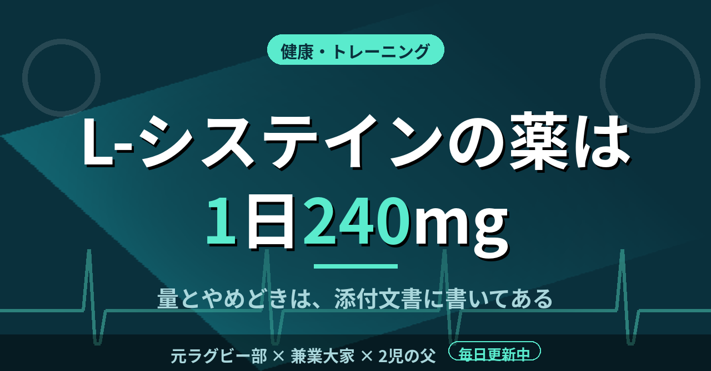

健康・トレーニングL-システインの市販薬は1日240mg。サプリを減らした僕が、成分表の数字を見直した
僕が今も続けているサプリの中に、L-システインがある。ビタミンCと並んで、肌のために飲み始めたものだ。ただ、一度サプリを盛りすぎて肝臓の数値を悪くしてから、量は控えめにしている。そのとき初めて、同じ成分が薬局で「医薬品」として売られていることを意識した。
肌を気にし始めたのは3年前、関東の工場から京都の研究所に勤務が変わったころだ。外に出る時間が減り、鏡を見て「このまま年を取ったら怖い」と思った。ダーマペンと並行して、内側からも何かしたくて選んだのが、ビタミンCとL-システインだった。そのころは、医薬品と食品の違いを考えたこともなかった。
同じ成分でも、薬と食品に分かれる
L-システインは、たんぱく質を作るアミノ酸の一つだ。ドラッグストアでは、しみ・そばかすの緩和をうたう錠剤として並んでいる。PMDA（医薬品医療機器総合機構）で添付文書を見ると、こうした製品はL-システインを大人1日量6錠中240mg含み、リスク区分は第3類医薬品になっている。
一方で、L-システインを含むサプリメントも食品として売られている。日本では、成分そのものと、医薬品的な効能をうたっているかどうかで、医薬品か食品かを分ける「食薬区分」という考え方がある。効能を書けないのが食品の側だ。僕が飲んでいるのは食品の側で、ラベルに効能らしい言葉はない。
添付文書に書いてあること
市販薬2つの添付文書を読み比べた。どちらも1日量のL-システインは240mg。ビタミンCは片方が300mg、もう片方が500mgだった。用法は1日3回、15歳以上は1回2錠で、7歳未満は飲まないこととある。効能には、しみ・そばかす・日やけなどの色素沈着症、全身倦怠、二日酔、にきびなどが並ぶ。
目を引いたのは「相談すること」の欄だ。しばらく服用しても症状がよくならない場合は服用をやめ、医師や薬剤師、登録販売者に相談する、と書いてある。量と、やめどきの目安が文書で決まっている。第3類は一般用医薬品の中でリスクが比較的低いとされる区分だが、それでもこの欄はある。食品のサプリには、それがない。
量の線を引くのは自分だった
サプリを何種類も足していたころ、僕は1つ1つの量を足し算していなかった。ビタミンCは別の製品にも、マルチビタミンにも入っていた。成分が重なっていると気づいたのは、肝臓の数値を指摘されてからだ。量を減らしたあと、直近の健康診断で数値は正常に戻った。
国の「日本人の食事摂取基準（2025年版）」では、ビタミンCの推奨量は成人で1日100mgだ。さっきの市販薬の1日量は、その3〜5倍にあたる。医薬品にはこうした量と相談の目安が書かれているが、食品のサプリは、その線を自分で引くしかない。
今の僕は、残したものの成分表を並べて、同じ成分が重なっていないかを見ることから始めている。L-システインが僕の肌にどう働いているかは、僕には判断できない。それでも、自分が1日に何mg入れているかは答えられるようにしておく。
飲むものを増やす前に、数字を書き出す。サプリで一度失敗した僕が、いま一番守っていることだ。
この記事は note にも掲載しています。